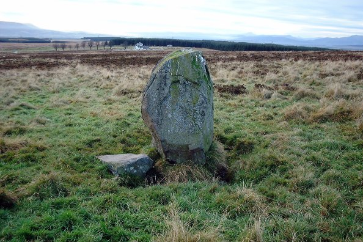

The Battle of Sherramoor
La bataille de Sherrifmuir
Lyrics adapted by Robert Burns for the
Scots Musical Museum Vol. III N°282 pages 290/291 (1790)
followed by
Dialogue between Will Lickladle and Tam Cleancogue
Dialogue entre Will Lèche-louche et Tam Rince-tonneau
By Rev. John Barclay (1734 - 1798)From J. Ritson's "Scotish Songs", volume II, p.67 (class III, N°17), 1794, who had taken it "from a modern stall copy", and
from Hogg's "Jacobite Relics" Vol II N°2 (1821) Tune - Mélodie
(The Cameronian Rant)
Reel in F Mixolydian
Variant -Variante
March in C major (Sound background to this page)
Tunes sequenced by Ch.Souchon
|
SHERIFFMUIR - SHERRIFMUIR - SHERRAMOOR
Rough location map (bottom half) Map of the battle field |
|
To the tune:
The name "Cameronian" refers to a sect called "Society People" or "Cameronians" from their founder, Richard Cameron, who preached for acute covenanted Christianity in the Southern Scotland. The Cameronians were hunted as a splinter group and several leaders were hanged but their fighting spirit remained intact. Eventually the British authorities gave up stamping them out and decided to use them in their fight against the Roman Catholic Highlanders. The result was a regiment called "The Cameronians", the only regiment in the British army to bear the name of a religious leader. The regiment first fought in 1689, when 1200 recruits broke a 5000 Jacobite veteran force, thus earning a reputation for fiercenes. In accordance with their militant religious origin, each enlisted man was required to have a bible in his kit and even in the 20th century the regiment carried arms to church. The Cameronian Rant was published in: Bremner's Scots Reels en 1757, McGlashan's Strathpey Reels en 1770 McDonald's Skye Collection en 1784 Gow's Complete Repository - Part 1 en 1799, O'Farrel's Pocket Companion Vol 3 en 1808 Kerr's Merry Melodies Vol 1 en 1880 Stewart-Robertson's Athole Collection en 1884. "Rant" means "boisterous merrymaking". |
A propos de la mélodie:
L'adjectif "Cameronien" s'applique à l'origine à une secte appelée "Society People" ou "Cameronians" d'après leur fondateur, Richard Cameron, qui prônait une forme extrême de protestantisme "covenantaire" dans le sud de l'Ecosse. Les Cameroniens furent d'abord traqués en tant que groupe dissident et plusieurs de leurs chefs furent pendus, ce qui n'entama en rien leur caractère combatif. Finalement les autorités britanniques renoncèrent à les éliminer et choisirent au contraire de les utiliser contre les catholiques des Highlands. C'est l'origine du régiment appelé "The Cameronians", le seul régiment de l'armée britannique à porter le nom d'un chef religieux. Le régiment remporta sa première victoire en 1689, lorsque 1200 recrues vinrent à bout d'une armée forte de 5000 vétérans Jacobites, ce qui lui valut sa réputation de férocité. En accord avec sa tradition de militantisme religieux, tous les soldats de ce régiment sont tenus d'avoir une bible dans leur paquetage et jusqu'au 20ième siècle avaient le privilège d'entrer armés dans les églises. Le "Cameronian Rant" a été publié dans: Bremner's Scots Reels en 1757, McGlashan's Strathpey Reels en 1770 McDonald's Skye Collection en 1784 Gow's Complete Repository - Part 1 en 1799, O'Farrel's Pocket Companion Vol 3 en 1808 Kerr's Merry Melodies Vol 1 en 1880 Stewart-Robertson's Athole Collection en 1884. "Rant" signifie "charivari". |
|
To the text
The publisher Johnson expressly acknowledges Burns, in the "Museum" as the author of this particular song and there is a remark in Law's MS List: "Mr B. gave the words. Tune". In fact, Burns "only" imitated and amended a ballad (recently?) composed by the Rev. John Barclay, because, as he told the publisher of the Museum, the old words did not quite please him. Source: Complete Songs Of Burns online Book John Barclay (1734–1798), Scottish divine, was born in Munthiel in Perthshire and died in Edinburgh. He graduated at St. Andrews, and after being licensed became assistant to the parish minister of Errol in Perthshire. Owing to differences with the minister, he left in 1763 and was appointed assistant to another minister. In 1772 he was rejected as successor to the latter, and was even refused by the presbytery, this refusal being sustained by the General Assembly. Barclay then left the Scottish church and founded his own congregations at Sauchyburn, Edinburgh and London. His followers were called Barclayans, Barclayites or Bereans , the latter because they regulated their conduct by study of the Scriptures after the biblical Bereans of Acts xvii. 11. They held to a modified form of Calvinism. The Berean Church mainly merged with the Congregationalists after Barclay's death. His works, includes many hymns and paraphrases of the psalms,a book called "Without Faith, without God"... [and the present satire on Sheriffmuir Battle entitled in the stall copies "A dialogue between Will Lickladle and Tom Cleancogue"]. Source: Wikipedia |
A propos du texte
L'éditeur Johnson désigne expressément Burns comme l'auteur de ce texte et l'on trouve une remarque dans la liste de manuscrits de Law: "les paroles sont de M .B.". Pourtant Burns "ne fit que" revoir et corriger une ballade (nouvellement?) composée par le pasteur John Barclay, mais qui ne le satisfaisait pas, confiait-il à son éditeur. Source: Complete Songs Of Burns online Book John Barclay (1734–1798), pasteur écossais né à Munthiel près de Perth et mort à Edimbourg. Il étudia à St. Andrews et devint le vicaire du pasteur d'Errol en Perthsire. Des différends avec celui-ci l'amenèrent à quitter cette paroisse en 1763 et il devint vicaire d'un autre pasteur. En 1772 le consistoire lui refusa de succéder audit pasteur, un refus confirmé par l'Assemblée générale. Barclay quitta alors l'Eglise réformée et fonda ses propres congrégations à Sauchyburn, Edimbourg et Londres. Ses disciples furent appelés Barclayens, Barclayites ou Béréens , ce dernier nom leur venant du peuple dont parlent les Actes des Apôtres xvii 11, auquel l'étude des Ecritures dictait sa conduite. Ils prônaient un calvinisme modifié. Cette église Béréenne fusionna pour l'essentiel avec les Congrégationnistes après la mort de Barclay. Son œuvre comprend de nombreux cantiques, des paraphrases des paumes, un livre intitulé "Sans foi ni Dieu"...[et le présent pamphlet que les librairies diffusaient sous le titre "Dialogue entre Will Lèche-louche et Tom Rince-tonneau"]. Source: Wikipedia |
Sheet music - Partition

|
THE BATTLE O' SHERRAMOOR
1. - O came ye here the fight to shun, Or herd the sheep wi’ me, man? Or were ye at the Sherramoor, Or did the battle see, man? - I saw the battle, sair and teugh, And reekin-red ran mony a sheugh; My heart, for fear, gaed sough for sough, To hear the thuds, and see the cluds O’ clans frae woods, in tartan duds, Wha glaum’d at kingdoms three, man. La, la, la, la, etc. 2. The red-coat lads, wi’ black cockauds, To meet them were na slaw, man; They rush’d and push’d, and blude out gush’d And mony a bouk did fa’, man: The great Argyle led on his files, I wat they glanced twenty miles; They hough’d the clans like nine-pin kyles, They hack’d and hash’d, while braid-swords, clash’d, And thro’ they dash’d, and hew’d and smash’d, Till fey men died awa, man. La, la, la, la, etc. 3. But had ye seen the philabegs, And skyrin tartan trews, man; When in the teeth they dar’d our Whigs, And covenant True-blues, man: In lines extended lang and large, When baigonets o’erpower’d the targe, And thousands hasten’d to the charge; Wi’ Highland wrath they frae the sheath Drew blades o’ death, till, out o’ breath, They fled like frighted dows, man! La, la, la, la, etc. 4. - O how deil, Tam, can that be true? - The chase gaed frae the north, man; I saw mysel, they did pursue, The horsemen back to Forth, man; And at Dunblane, in my ain sight, They took the brig wi’ a’ their might, And straught to Stirling wing’d their flight; But, cursed lot! the gates were shut; And mony a huntit poor red-coat, For fear amaist did swarf, man! La, la, la, la, etc. 5. - My sister Kate cam up the gate Wi’ crowdie unto me, man; She swoor she saw some rebels run From Perth unto Dundee, man; Their left-hand general had nae skill; The Angus lads had nae gude will That day their neibors’ blude to spill; For fear, for foes, that they should lose Their cogs o’ brose; they scar’d at blows, And hameward fast did flee, man. La, la, la, la, etc. 6. - They’ve lost some gallant gentlemen, Amang the Highland clans, man! I fear my Lord Panmure is slain, Or fallen in Whiggish hands, man, Now wad ye sing this double fight, Some fell for wrang, and some for right; But mony bade the world gude-night; Say, pell and mell, wi’ muskets’ knell How Tories fell, and Whigs to hell Flew off in frighted bands, man! La, la, la, la, etc. |
LA BATAILLE DE SHERRIFMUIR
1. - Viens-tu par là fuir le combat, Ou me garder mes ouailles? Ou, de retour de Sherramoor, Me conter la bataille? - J'ai vu le combat acharné, Le sang couler dans les fossés; Mon cœur de frayeur tressaillait Aux bruits et aux fumées, sortant Des bois: tous ces tartans bravant Notre triple royaume. La, la, la, la, etc. 2. Habits rouges, cocardes noires, A venir ne tardèrent: Quelle ruée! Le sang coulait! Plus d'un gisait à terre! Avec ses gens le Grand Argyle , Avait franchi plus de vingt miles. Les clans tels des quilles oscillent: Et vlan! et paf! les broadswords tapent Qu'il se débatte, ou bien qu'il frappe Plus d'un montagnard tombe. La, la, la, la, etc. 3. Et pourtant les gens en tartans Aux couleurs magnifiques, Montrant les dents aux "Covenants", Aux Whigs, aux Loyalistes S'alignent sur un front plus large, Et abandonnant là leurs targes, A leur tour montent à la charge! Le montagnard empli de haine Son sabre dégaine; hors d'halène. Les Whigs prennent le large! La, la, la, la, etc. 4. - Comment cela? Je n'y crois pas! - Si, les Gaëls les chassent! Les cavaliers sont repoussés Jusqu'au Forth, quelle audace! Et à Dunblane, je les ai vus, Submerger le pont, éperdus. Cherchant à Stirling le salut; Oui mais, mes pauvres, c'est porte close! Et plus d'un Whig, las et morose Se pâme d'épouvante! La, la, la, la, etc. 5. - Ma sœur Kate longeant la haie M'apporta ma pitance, "J'ai vu, dit-elle, des rebelles Pour Dundee, en partance"; A gauche, un mauvais général. Les hommes d'Angus, trouvant mal De verser le sang familial, De peur qu'une écuelle ennemie Ne s'emplisse de leur bouillie, Regagnent leurs pénates. La, la, la, la, etc. 6. - Plus d'un vaillant seigneur est mort, Chez ceux des Hautes Terres. Ou Panmure a subi ce sort, Ou les Whigs l'emmenèrent. Pourquoi chanter cette bataille Double? En quelque lieu que l'on aille, Partout l'heure est aux funérailles, Et, tirant des coups de mousquets, Tories et Whigs, épouvantés, Au diable vert détalent! La, la, la, la, etc. (Trad. Ch.Souchon(c)2005) |

Dialogue between Will Lickladle and Tam Cleancogue,
twa shepherds wha were feeding their flocks on the Ochil Hills
on the day the battle of Sheriffmuit was fought.
Dialogue entre Will Lèche-louche et Tam Rince-tonneau
deux bergers qui gardaient leurs troupeaux sur les collines d'Ochil
le jour de la bataille de Sherrifmuir.
From J. Ritson's "Scotish Songs", volume II, p.67 (class III, N°17), 1794
and James Hogg's "Jacobite Relics" Volume II N°2 page 6, 1821
|
Beside Burns's version, styled "Modern set", under N°3, the second volume of Hogg's "Jacobite Relics" presents the
original lyrics
of this song. Concerning Burns's version Hogg proves a severe critic. He writes:
"This is an edition of the last by Burns, certainly nothing improved from the original. It is printed in Johnston's "Museum" as written by Burns ..., without any acknowledgment of the old song from which it is taken, a good deal of it word for word." |
Outre la version de Burns, intitulée, "Version moderne" et classée sous le n°3, les "Reliques Jacobites de Hogg présentent les
paroles originales
de ce chant. Concernant la version de Burns, Hogg se montre très critique. Il écrit:
"Ce dernier morceau est le précédent revu par Burns qui ne l'a certainement amélioré en aucune façon. Il est indiqué dans le "Musée" de Johnston qu'il a été écrit par Burns...sans aucune référence à l'ancien chant dont il a pourtant recopié une grande partie mot pour mot." |
|
1. Will: Pray came you here the fight to shun, Or keep the sheep wi' me, man? Or was you at the Sherramuir, And did the battle see, man? Pray tell whilk o' the parties wan, For weel I wat I saw them run Both south and north, when they begun To pell, and mell, and kill, and fell, With muskets snell and pistols knell, And some to hell did flee, man. [1] Huh! Hey dum dirrum hey dum dan Huh! Hey dum dirrum dey dan. Huh! Hey dum dirrum hey dum dandy Hey dum dirrum dey dan. 2. Tam: But, my dear Will, I kenna still Whilk o' the twa did lose, man ; For weel I wat they had gude skill To set upo' their foes, man. The redcoats they are train'd, you see, The clans always disdain to flee ; Wha then should gain the victory? [2] But the Highland race, all in a brace, With a swift pace, to the Whigs' disgrace, Did put to chace their foes, man. Huh ! hey dum dirrum, &c. 3. Will: Now, how deil, Tam, can this be true ? I saw the chace gae north, man. [3] Tam: But weel I wat they did pursue Them even unto Forth, man. Frae Dunblane they ran, i' my own sight, And got o'er the bridge wi' a' their might, And those at Stirling took their flight : Gif only ye had been wi' me, You'd seen them flee, of each degree, For fear to die wi' sloth, man. [4] Huh ! hey dum dirrum, &c. 4. Will. My sister Kate came o'er the hill Wi' crowdie unto me, man ; She swore she saw them running still Frae Perth unto Dundee, man. [5] The left wing gen'ral had nae skill, The Angus lads had nae gude will That day their neighbours' blood to spill; [6] For fear, by foes, that they should lose Their cogues o' brose, all crying woes- Yonder them goes, d'ye see, man ? Huh ! hey dum dirrum, &c. 5. Tam. I see but few like gentlemen Amang yon frighted crew, man: I fear my Lord Panmure be slain, [7] Or that he's ta'en just now, man. For though his officers obey, His cow'rdly commons run away, For fear the redcoats them should slay. The sodgers' hail made their hearts fail; See how they skale, and turn their tail, And rin to flail and plough, man! Huh! hey dum dirrum, &c. 6. Will. But now brave Angus comes again Into the second fight, man; They swear they'll either die or gain, No foes shall them affright, man: Argyle's best forces they'll withstand, And boldly fight them sword in hand, Give them a gen'ral to command, A man of might, that will but fight, And take delight to lead them right, And ne'er desire the flight, man. Huh! hey dum dirrum, &c. 7. But Flanderkins they have nae skill [8] To lead a Scottish force, man; Their motions do our courage spill, And put us to a loss, man. ' You'll hear of us far better news, When we attack wi' Highland trews, To hash, and smash, and slash, and bruise, Till th' field, though braid, be all o'erspread, But coat or plaid, wi' corpses dead, In their cauld bed, that's moss, man. Huh ! hey dum dirrum, &c. 8. Tam. Twa gen'rals frae the field did run, Lords Huntly and Seaforth, man; [9] They cried and run, grim death to shun, Those heroes of the north, man. They're fitter far for book or pen, Than under Mars to lead on men : Ere they came there they might weel ken That female hands could ne'er gain lands; Tis Highland brands that countermands Argathlean bands [10] frae Forth, man. Huh! hey dum dirrum, &c. 9. Will. The Camerons scour'd as they were mad, Lifting their neighbours' cows, man; [11] McKenzie and the Stewart fled But philabeg or trews, man. Had they behav'd like Donald's corps, And kill'd all those came them before, Their king had gone to France no more : Then each Whig saint wad soon repent, And straight recant his covenant, And rent it at the news, man. [*] Huh! hey dum dirrum, &c. 10. Tam. McGregors they far off did stand, [12] Bad'noch and Atholl too, man; I hear they wanted the command For I believe them true, man. Perth, Fife, and Angus wi' their horse, Stood motionless, and some did worse; For though the redcoats went them cross, They did conspire for to admire Clans run and fire, left wing retire, While rights entire pursue, man. [13] Huh! hey dum dirrum, &c. 11. Will. But Scotland has not much to say For such a fight as this is Where baith did fight, baith ran away; And devil take the miss is, That ev'ry off'cer was not slain, That ran that day, and was not ta'en Either flying to or from Dunblane: When Whig and Tory, in their fury Strove for glory, to our sorrow, This sad story hush is. [14] Huh! hey dum dirrum, &c. |
1. Will: Viens-tu par là fuir le combat, Ou me garder mes ouailles ( =brebis )? Ou, de retour de Sherramoor, Me conter la bataille? Dis-moi quel parti a gagné: Ce que j'ai vu, c'est qu'on courait Au nord, au sud, tout au début De la mêlée; et qu'on tombait Devant mousquets et pistolets. Certains fuyaient au diable. [1] Huh! Hey dum dirrum hey dum dan Huh! Hey dum dirrum dey dan. Huh! Hey dum dirrum hey dum dandy Hey dum dirrum dey dan. 2. Tam: Mon cher Will, on ne sait à qui Attribuer la victoire. Les deux partis, ça je le dis Se montrent méritoires: Habits rouges bien entraînés; Clans qui ne décrochent jamais. Lesquels des deux vont l'emporter? [2] Voilà pourtant que les Highlands D'un pas rapide, honte aux Whigs, Chassent leurs adversaires. Huh! hey dum dirrum, &c. 3. Will: C'est vers le nord que moi je vis, La poursuite se faire! [3] Tam: Et moi je dis: les Whigs ont fui Vers le Forth, la rivière. Quittant Dunblane, je les ai vus Traverser le pont, éperdus, Et ceux de Stirling eux aussi Ont fui: ça se voyait d'ici. Tous fuyaient, soldats, officiers Sauve qui peut! Fais vite! [4] Huh! hey dum dirrum, &c. 4. Will: Ma sœur est venu me nourrir Venant par les prairies; Et jure qu'on voit des gens fuir De Perth jusqu'à Dundee. [5] A l'aile gauche un commandant Auquel Angus récalcitrant Refuse le sang de son clan.[6] De peur que l'ennemi ne prenne Leur pitance tous se démènent. Vois-tu comme ils détalent? Huh! hey dum dirrum, &c. 5. Tam: Très peu de gentilshommes, vois Parmi ceux qui se sauvent. Je crains que Panmure ne soit Mort ou aux mains d'Hanovre. [7] Ses officiers font leur devoir, Mais ses soldats sont des couards Que l'habit rouge rend hagards. Sous la mitraille, l'on défaille Et l'on fuit loin de la bataille! A nous, fléau, charrue! Huh! hey dum dirrum, &c. 6. Will. Le brave clan Angus revient Pour prendre sa revanche. "Ou bien je meurs, ou bien je vaincs! Je veux tenter ma chance. Argyll n'a qu'à bien se tenir On ne nous fera plus courir! Notre général peut venir! Un homme à poigne, et plein de hargne Qui fit déjà quelques campagnes Et méprise la fuite!" Huh! hey dum dirrum, &c. 7. Mais les "Mijnheer" n'entendent guère Aux troupes écossaises. [8] Les manœuvres qu'ils leur font faire Les mettent mal à l'aise. "Vous seriez plus contents de nous Si, vêtus de nos "Highland trews", Vous nous laissiez faire les fous, Jusqu'à ce que l'immense plaine Soit jonchée de cadavres blêmes Reposant sur la mousse!" Huh! hey dum dirrum, &c. 8. Tam. Huntly, Seaforth, deux généraux, [9] Ont quitté la bataille, Criant qu'ils tenaient à leur peau. Des Scots, cette pleutraille? Tenir la plume leur sied mieux Que de commander, face au feu. Quel choix! ne savait-on point que Ce ne sont pas des délicats Qui détruiront les Argathiens [10] Du Forth, mais des claymores! Huh! hey dum dirrum, &c. 9. Will. Les Cameron aux environs Volent toutes les vaches. [11] Les McKenzie, les Stewart aussi Laissent là leurs soutaches. Si comme Donald ils allaient Droit devant eux et massacraient, Leur roi parmi nous resterait. Et les Whigs seraient repentants Abjureraient leurs covenants. Pas un qu'on ne déchire. [*] Huh! hey dum dirrum, &c. 10. Tam: McGregor restait à l'écart, [12] Badenoch, Atholl, de même, Attendant l'ordre du départ, Sans autre stratagème. Perth, Fife et cavaliers d'Angus Impassibles, n'ont pas fait plus: Car quand l'habit rouge parut Ces conspirateurs admiraient Les ailes gauches qui cédaient Devant les ailes droites. [13] Huh! hey dum dirrum, &c. 11. Will. L'Ecosse ne sort point grandie D'une telle bataille, Où chacun gagne la partie Mais chaque camp s'égaille. Eût-on tué, eût-on pris même Tous ces officiers qui, sans gêne, Fuyaient ou rejoignaient Dunblane, On pourrait, cette triste histoire Où Whigs et Tories sont sans gloire, La passer sous silence. [14] Huh! hey dum dirrum, &c. |
|
[1] As already mentioned,
the battle was drawn
, both sides claiming the victory.
[2] The ballad satirizes both sides in an impartial manner. [3] The two armies approached each other on the broad moor between the Ochil Hills and the Grampians. It is an undulating platform of gentle hummocky hills, and neither army saw very clearly the position and movements of the other. When the forces came into collision, it was discovered that the right wing of each was the strongest . [4] The rebels outnumbered the Government army. [5] But they lost the advantage by rushing the attack before the arrangements were completed. [6] In the Jacobite rebellions there always were clansmen of the same clan on both sides who were reluctant at fighting each others (here, the "Angus lads", i.e. the Douglases). [7] James Maule, 4th Earl of Panmure (1658 -1723) had been a Privy councillor to James II/VII whom he continued to support when the latter was in exile. He was an early supporter of the Jacobite cause. James Maule encouraged rebellion and the return of the King by signing a letter suggesting the country would rise to support him (1707). From the Mercat Cross at Brechin, he proclaimed James Francis Edward Stuart, the 'Old Pretender' as King James VIII (1715) and went on to fight at the battle of Sherrifmuir in November of the same year. He was captured but escaped, with his younger brother Henry , via Arbroath to the Continent the following year. This resulted in the forfeiture of the Panmure title and estates; indeed it is said that the gates of Panmure House have not been opened since. Maule was honoured by the Old Pretender and followed him to Avignon (1716) and then Rome (1717). He died of pleurisy in Paris, still in exile having twice refused the opportunity of reconciliation with the British government. Source: Wikipedia [8] By 'Flanderkins' are meant, so says Hogg, lieutenant-general Vanderbeck and colonels Rantzaw and Cromstrom) [9] Huntly, Seaforth : chiefs respectively of Clan Gordon and Clan McKenzie. [10] Argathlean : belonging to the Duke of Argyll's army. (Rev Barclay was apparently keen on etymology!) [11] Sir Walter Scott described how the Highlanders behaved in a campaign: "While on the field they would desert in three cases: - "if they fought and were beaten , they would run away and go home" : like Angus (Douglases) in verse 4. - "if they fought and were victorious, they would plunder and go home": here Camerons, McKenzies and Stewarts. [12] - "if much time was lost in bringing them into action , they would get tired and go home.": here Gordons (Badenoch) and Murrays of Atholl under Huntly and Tullibardine respectively. As for the McGregors who "did stand far off", their chief, the celebrated Rob Roy was present at the battle with his "caterans". He sympathized with the Pretender, but refrained from assisting the rebels, lest he should offence his protector the Duke of Argyle. So he stood on a hill with his clansmen watching the battle. He was pressed to assist, but he replied, "If they cannot do without me, they cannot do with me" and remained inactive. When the battle was over, the McGregors impartially spoiled the wounded and dead on both sides. [13] These tactics were obviously perplexing and inconvenient to the leaders (see verse 7), but they were practised in the rebellions of 1715 and 1745, and explain how the rebel armies in both cases rapidly melted away. (See "Culloden Day", stanza 4 ) [14] The ballad recites, as the only thing certain, that a battle was fought , and both sides ran away, but who won or who lost, the satirical rhymer knows not. Source for most of the notes above: "Complete Burns Songs Online Book" (see Links) [*] Covenant : Pact agreed upon in 1588 among the Scottish Presbyterians to preserve their religion and their independence against the Spanish threat. When Charles Ist attempted to impose on the Scots the rites of the Church of England, the covenant was reiterated in Edinburgh. During the struggle between Parliament and King Charles I the Scottish "covenanters" abandoned the King who had taken refuge in their army. With the mention, in verse 9 , of "each Whig saint... recanting and renting his covenant" Rev. John Barclay might possibly allude to his own contention with the Presbyterian Church which would date the song to the 1770ies. |
[1] Comme on l'a vu, à l'issue de cette
bataille indécise
, chacun des adversaires cria victoire.
[2] La ballade se moque de manière impartiale des deux camps à la fois. [3] Les deux armées s'abordèrent sur la large lande entre les collines d'Ochil et les Grampians. C'est un plateau ondulé avec de nombreux mamelons de sorte qu'aucune des deux armées ne voyait clairement les positions ni les mouvements de l'autre. Quand elles furent au contact, il apparut que l'aile droite de chacune était la plus forte . [4] L'armée Jacobite était supérieure en nombre . [5] Mais elle gaspilla cet avantage en précipitant l'attaque avant que son dispositif soit complètement en place. [6] Dans les soulèvements Jacobites, il y eut toujours des membres d' un même clan dans les 2 armées adverses qui renaclaient à verser le sang des autres (ici les "gens d'Angus", le clan Douglas). [7] Jacques Maule, 4ème Comte de Panmure (1658 - 1723) avait été conseiller privé de Jacques II/VII qu'il continua de soutenir pendant son exil et fut même un des tous premiers champions de la cause Jacobite. Il encouragea la rébellion et le retour du Roi en signant une lettre suggérant que le pays se soulèverait pour le soutenir (1707). Depuis la tribune du Mercat Cross de Brechin, il proclama Jacques François Edouard Stuart, le Vieux Prétendant, Roi Jacques VIII (1715) et retourna combattre à Sherrifmuir en novembre de la même année. Fait prisonnier, il s'enfuit avec son plus jeune frère Henri , et, depuis Arbroath, il rejoignit le continent. C'est pourquoi il fut destitué de son titre et de ses biens. On affirme que le portail du Château des Panmure ne s'est plus ouvert depuis. Maule fut couvert d'honneurs par le Vieux Prétendant qu'il suivit en Avignon (1716), puis à Rome (1717). Il mourut d'une pleurésie à Paris, toujours exilé, ayant, par deux fois, refusé le pardon du gouvernement anglais. Source: Wikipedia [8] Par "Mijnheer" (Flamands), il faut comprendre, selon Hogg, le général lieutenant Vanderbeck et les colonels de Rantzaw et de Cromstrom. [9] Huntly, Seaforth , chefs respectivement du clan Gordon et du clan McKenzie. [10] Argathlien : appartenant à l'armée d'Argyll: (Barclay était semble-t-il féru d'étymologie!) [11] Walter Scott décrit ainsi le comportement des Gaëls au cours d'une campagne: "Ils désertaient le champ de bataille dans trois cas: - "s'ils avaient subi une défaite , ils fuyaient à toutes jambes et rentraient chez eux." : comme les gens d'Angus (clan Douglas) strophe 4. -"s'ils avaient remporté la victoire , ils se livraient au pillage et rentraient chez eux." : c'est le cas ici des clans Cameron, McKenzie et Stewart. [12] -"Si l'on tardait trop à les lancer dans la mêlée , ils en avaient assez et rentraient chez eux." : C'est le cas ici du clan Gordon (Badenoch) et du clan Murray d'Atholl conduits respectivement par Huntly et Tullibardine. Quant aux McGregor qui "restaient à l'écart", leur chef, le fameux Rob Roy , était présent ce jour-là avec ses "brigands". Il avait de la sympathie pour le Prétendant, mais s'abstint d'aider les rebelles, pour ne pas se mettre à dos son protecteur, le Duc d'Argyll. Aussi resta-t-il sur un mamelon, avec ses hommes, à regarder la bataille. Pressé d'intervenir, il répondit: "s'ils ne peuvent pas se débrouiller sans moi, ils ne se débrouilleront pas d''avantage avec moi". Et il demeura inactif. Une fois la bataille terminée, les McGregor, en toute impartialité, se mirent en devoir de dépouiller les blessés et les morts des deux camps. [13] Cette tactique des clans ne laissait pas de dérouter les officiers dont elle contrecarrait les plans (cf. strophe 7), mais elle fut mise en oeuvre tant en 1715 qu'en 1745. Elle explique pourquoi l'armée rebelle se volatilisa si vite dans les deux cas. (Cf. "Culloden Day", str. 4 ) [14] Le leitmotiv de la ballade est qu'on ne peut douter qu' il y ait eu une bataille , qu'on a fui des deux côtés, mais que le poète ne peut dire qui a gagné et qui a perdu. Source principale des notes ci-dessus: "Complete Burns Songs Online Book" (see Links) [*] Covenant : Pacte entre les Presbytériens d'Ecosse pour sauvegarder leur religion et leur indépendance en 1588 face à la menace espagnole. Lorsque Charles Ier voulut imposer aux Ecossais le rite anglican le covenant fut renouvelé à Edimbourg. Pendant les luttes entre le Parlement et Charles Ier les "covenantaires" écossais livrèrent le roi qui s'était réfugié au milieu de leur armée. La strophe 9 dans les 3 dernières lignes parle des covenants que les "Whigs" seraient amenés à "abjurer et à déchirer". On peut y voir une allusion de John Barclay à ses propres démêlés avec l'église presbytérienne, ce qui daterait le chant des années 1770. |
The "Corries" singing "Sherrifmuir" (First version)